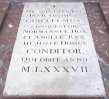

Le Ménage ès Feuvres,
St. Ouën.
Lé 5 d'août, 1972.
Moussieu l'Rédacteu,
Un jour, quand j'tais à Caën, j'visitis l'Abbaye d'St. Étienne et j'm'arrêtis à r'garder la pièrre tombale, dans l'aithe dé l'églyise, tchi montre la tombe dé Dgilliaume lé Contchérant, Duc de Nouormandie et Rouai d'Angliétèrre. Oulle est située en d'vant du maître autel. Ch'tait li tch'avait bâti l'abbaye, et ch'tait bein à propos tch'i' fûsse entèrré d'dans.
Ouaithe tch'il avait 'té un fort homme et iun des grands dgièrrièrs dé s'n êpoque, Dgilliaume eut eune bein triste fîn. Il 'tait dév'nu piêssant et n'pouvait pus mett' sa cotte dé maille. En 1086, étant convaintchu tch'il avait êtablyi s'n autorité en Angliétèrre, i' tchittit l'pays pour s'en aller en Nouormandie consulter l'Êvêque Gilbert dé Lisieux, et l'Abbé Gontard dé Jumiéges tch'avaient eune èrnommée comme ayant connaîssance dé la méd'cinne. I' l'consilyîdrent dé suivre un régînme dé vivre maigre et d'garder l'liet pour pèrdre du paids. Mais les Français 'taient à faithe du troubl'ye dans l'Comté du Vexîn, et l'Contchérant n'restit pon au liet longtemps - et l'èrvéla en dgèrre!
Dans l'mais d'août, 1087, sén armée, auve li en tête, 'tait en marche. Arrivés à Mantes, i' brûlit la ville - châté, églyises, maisons et toute la boutique. Dgilliaume 'tait dans sa glouaithe, i' s'viyait l'dgèrryi d'aut'fais et à j'va, i' galopait partout à encouothagi ses soudards, mais i' y'arrivit eune avârie. San j'va fit un var pour êviter d'piler sus du bouais tchi brûlait, et l'Contchérant fut poussé violement contre lé pommé d'sa selle et s'fit si ma au ventre tch'i' y'avait soupçon tch'il avait endommagi ses bouoyaux. I' souffrait tant tch'il eut à tchitter la batâle, et i' fut porté au monastéthe dé Gervase, dans l'village dé Hermentrude, pas bein liain d'Rouën. Là, l'Êvêque Gilbert et Gontard dé Jumiéges continnuîdrent à l'souangni, mais i' pèrdit ses forches et d'vînt d'pus en faille. Il avait l'idée tch'i' n'sé r'faîthait pon et fît san testament. I' donnit l'Duché d'Nouormandie à san fis Robert, et dit tch'il espéthait qué ché s'sait la volanté du Bouan Dgieu qué san fis Dgilliaume (seurnommé Rufus) s'sait san successeur comme Rouai d'Angliétèrre.
I' dormit bein la niet du 8 septembre, 1087. Quand i' s'rêvilyit au p'tit jour du 9 septembre i' ouïyait les clioches dé la Cathédrale dé Rouën. I' sonnent la Prime (preumièthe heuthe canoniale) à l'Églyise dé Ste. Mathie, un sèrviteur lî dit. I' mouothit tchiques munnutes auprès en confiant s'n âme à la grâce du Bouan Dgieu. Il 'tait dans sa souoxantième année. San régne avait duthé 22 ans en Nouormandie et 21 en Angliétèrre.
I' n'y avait qu' des sèrviteurs là quand i' rendit l'drein soupi. San corps, tout gonflié, restit là sans compangnie dépis l'heuthe dé la Prime jusqu'à Tierce (la deuxième heuthe canoniale dé l'églyise). Ses sèrviteurs et les gens d'alentou lus mîndrent à voler tout chein tch'i' pouvaient mett' la patte dessus, mème ses habits et les lîncheurs et convértuthes du liet, et l'corps finnit par tchaie dans l'aithe.
Un J'valyi nommé Herluin s'adonnit sus les lieux, et quand i' vit l'cadâvre dans l'triste êtat tch'il 'tait, il engagit d's entrépranneurs pour lé prépather pour la tombe. I' fut porté à Rouën et embèrtchi dans un navithe tchi s'en allait à Caën. L'Êvêque Gilbert et les moines dé l'Abbaye d'St. Étienne et les grosses têtes dé Caën 'taient là à l'attendre, et la procêssion fît c'mIn pour l'abbaye.
Mais l'Contchérant n'tait pon pour êt' entèrré en paix. Eune fôsse avait 'té prépathée entre lé tchoeur et l'autel, et l'côffre fut mîns à côté quandy qu' Gilbert prêchit l'sèrmon funèbre. La Mésse dé Réquiem finnie, il' 'taient prêts à d'valer l'défunt dans la fôsse quand lé J'valyi Ascelin Fitz Arthur sé l'vit sus ses pids d'drièthe et dit qué la tèrre dans tchi qu' la fôsse avait 'té creûsée li'apparténait, qué Dgilliaume l'avait prînse pour bâti s'n abbaye d'ssus, et né l'avait janmais payi pour.
Les grosses têtes laïques et ecclésiastiques présentes fîdrent eune collecte et payîdrent Fitz Arthur un montant suffisant pour lé calmer, et l'inhumation c'menchit. I' halîdrent lé corps dé d'dans l'coffre d'bouais pour lé d'scendre dans un côffre en pièrre tch'était dans l'fond d'la fôsse, mais ch'tî-chîn 'tait trop p'tit pour lé corps gonflié du défunt, et en êprouvant à l'forchi d'dans, san ventre, dêjà à maîntchi dêcompôsé, crévit, et eune odeu êpouvantabl'ye fît tout l'monde s'êcarter d'la fôsse. I' brûlîdrent un tas d'enchens, mais y'avait quand mème tant d'odeu qué l'sèrvice fut raccourchi et tout l'monde s'en fûdrent hors dé l'abbaye en hâte et en prêsse.
Tchi triste fîn pour un homme tch'avait 'té tellement fanmeux comme dgèrryi, rouai et administrateu! Et ses os n'restîdrent pon en r'pos. Sa tombe fut profané par les Hugenots en 1562 et dans l'temps d'la Révolution française. Bouan Dgieu sait si ch'est ses os tchi sont là à ch't heu!
George d'La Forge
Viyiz étout: